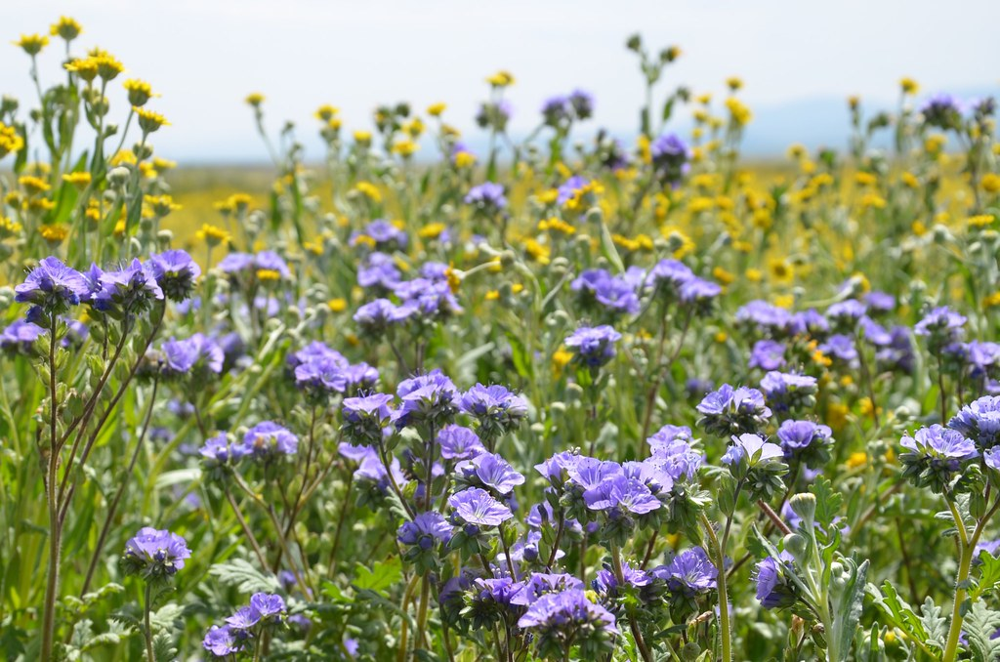
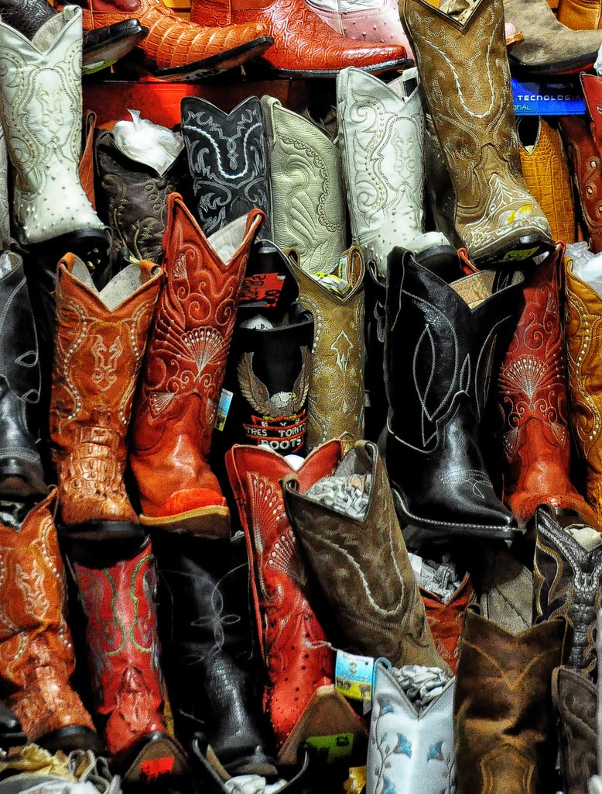
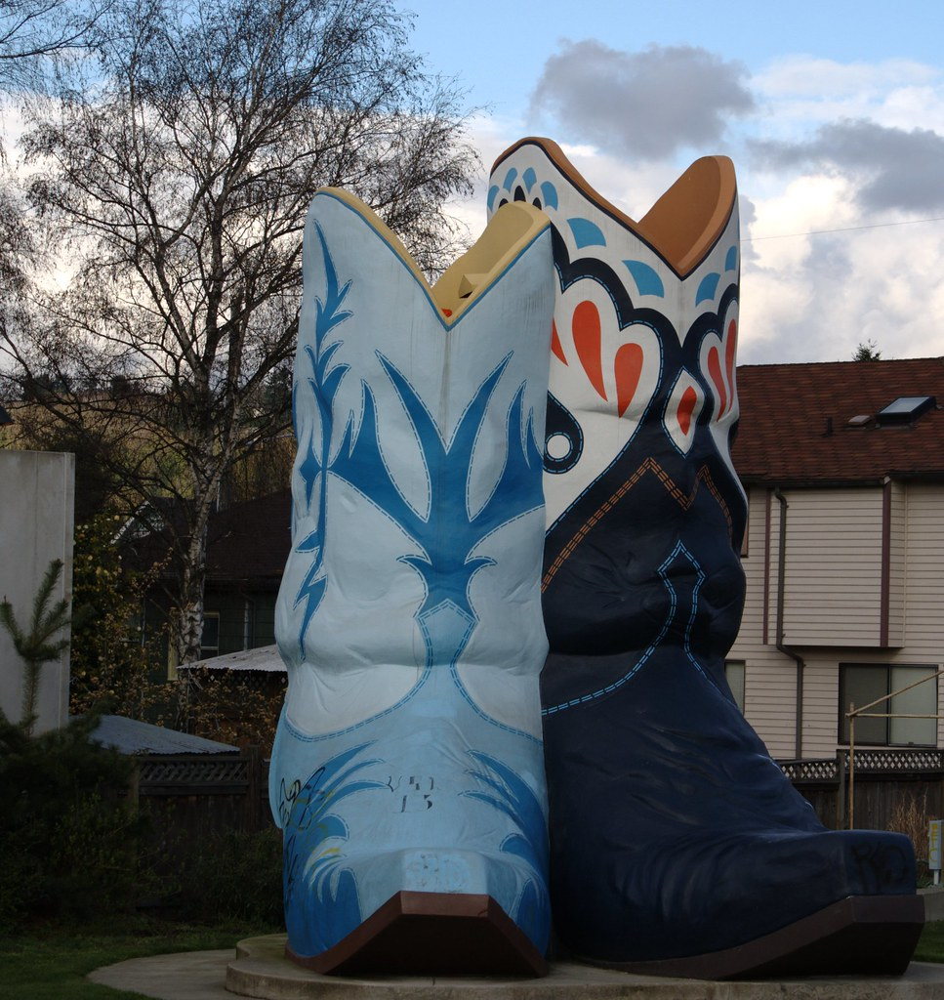
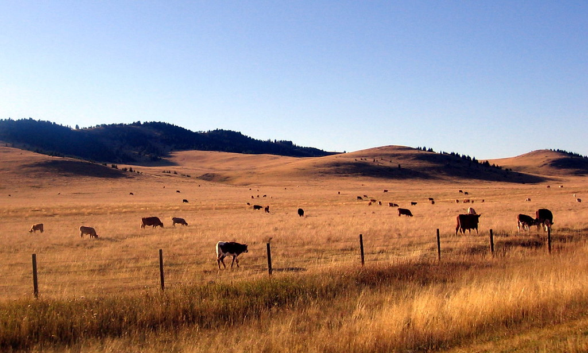
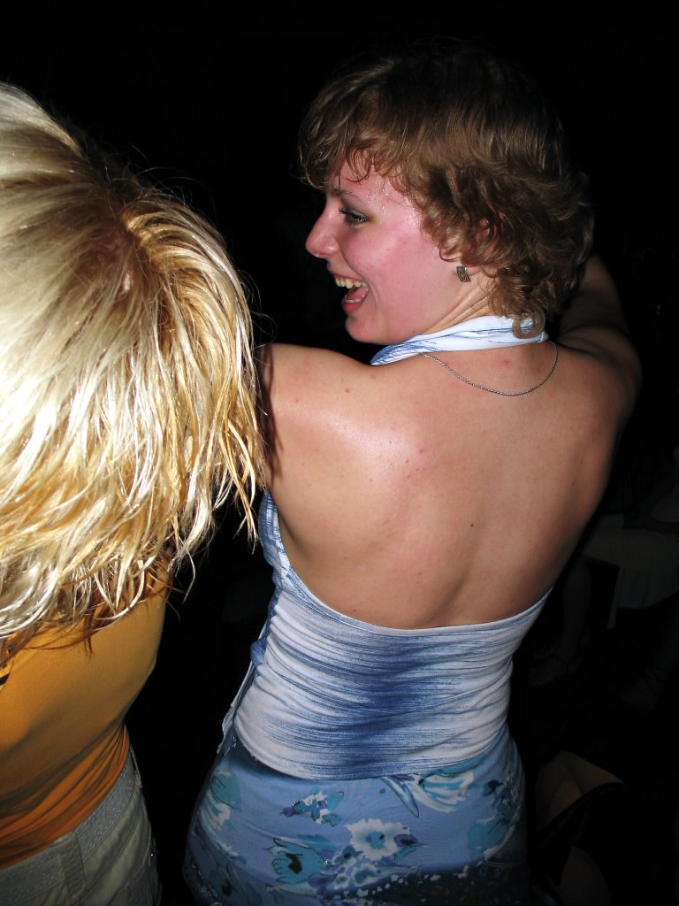
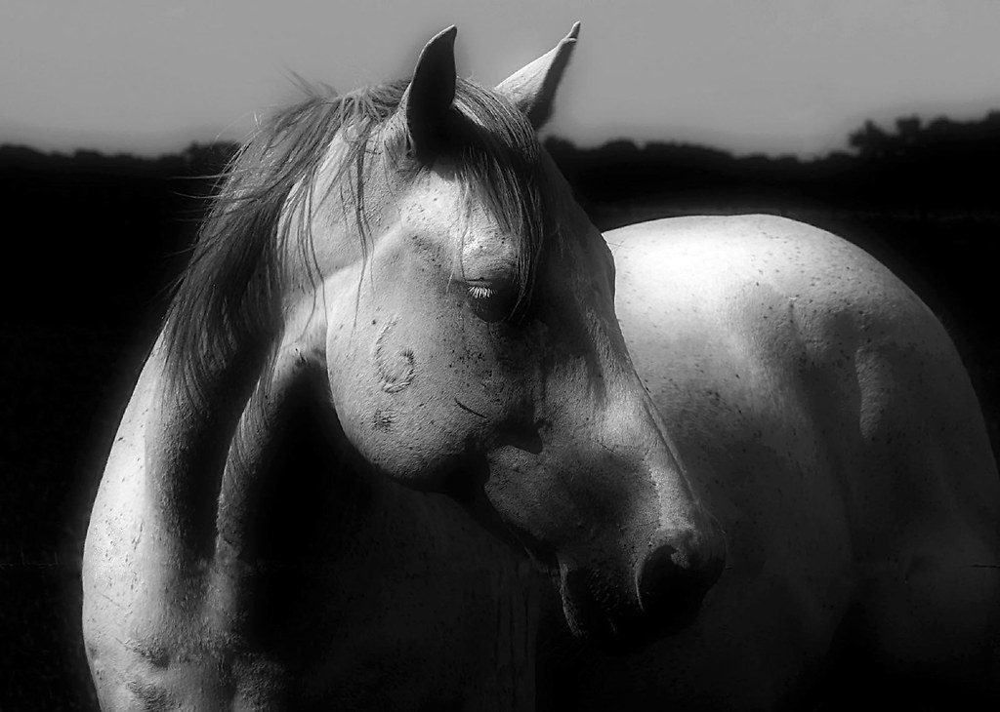
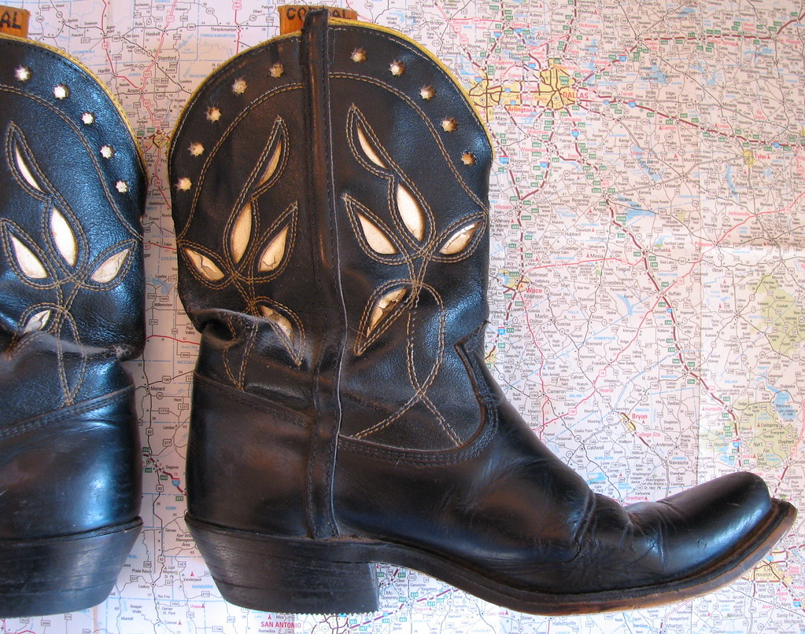

🎨 Arte
Arte y creatividad
Mi cabeza nunca se queda quieta: siempre hay una idea, un boceto o algo por decorar. Crear es mi forma de descansar y de decir lo que siento sin tener que explicarlo.
Un poco arte, un poco dembow, un campo de flores y un par de botas muy grandes. Esta es mi mini página: alegre, ruidosa y hecha con mucho cariño.



La versión corta: si hay música, flores o algo creativo por hacer, ahí estoy. Y si además hay botas, mejor.

Soy Cinthya: una persona alegre y divertida, de esas que llegan y el ambiente sube de volumen. Me gusta reír mucho, contar cosas exageradas y sacarle provecho a cualquier día normal.
Del lado creativo soy media artista: me encanta crear cosas con las manos, pintar, armar, decorar y ver cómo una idea se vuelve algo real. Para mí el color nunca está de más, y por eso azul y lavanda son los tonos que van con todo.
Cuando no estoy creando, me encuentras en plan naturaleza —flores, campos y cosas bonitas— o bailando lo que suene, porque el reggaetón es licencia oficial para dejar de pensar.
Y sí, también tengo mis cosas raras: cosas de rancho, botas y zapatos gigantes me parecen lo máximo. Detrás de todo, lo más importante: amo a mi suegra 💜.
Pinceles, colores y proyectos a medio terminar que siempre terminan lindísimos.
Arte y creatividadSi hay flores de por medio, el día ya ganó. Naturaleza y color en cada esquina.
Flores y naturalezaReggaetón a buen volumen. Si entra el dembow, el baile empieza solo.
Modo fiestaVallas, caballos, atardeceres y ese aire de campo que no se compra.
Cosas de ranchoMientras más grandes, mejor. Un zapato enorme siempre es buena idea.
Gusto peculiarSin rodeos ni excusas: mi suegra es lo máximo y lo digo con orgullo.
Amor puroArte y naturaleza: la combinación que nunca falla.
Mi cabeza nunca se queda quieta: siempre hay una idea, un boceto o algo por decorar. Crear es mi forma de descansar y de decir lo que siento sin tener que explicarlo.
Un campo de flores, el aire libre y los colores de la naturaleza me recuerdan que las cosas bonitas no tienen que complicarse: con mirarlas alcanza.
Cada cosa que hago lleva un poquito de corazón. Literal: hasta mi forma de pintar termina en corazones.

Atardeceres, vallas, caballos y silencio bonito: mi lado campo favorito para recargar energías.
Mi lista oficial de cosas que siempre funcionan para sacarme de buen humor.

En cuanto suena el dembow, yo ya estoy bailando. El volumen va alto y las excusas, a otro lado.

Caballos, campo abierto y horizonte infinito. El plan perfecto para respirar hondo.
Un zapato enorme me parece lo más divertido del mundo. Si es azul, todavía mejor.

Botas para el campo, botas para la ciudad, botas para bailar. Siempre hay un par esperando.
Toca el corazón para leer el mensaje ↓
Quiero que se note: amo a mi suegra. La quiero con el corazón, sin maquillaje y sin pose. Es de esas personas que llegan y todo se pone más fácil, más risa y más tranquilo.
Gracias por el cariño de siempre, por tratarme como uno más de la familia y por esos consejos que llegan justo cuando los necesito. Cualquier día es bueno para decirlo, así que hoy lo digo bien grande: mi suegra es la mejor y estoy muy agradecida de tenerla.
Que nos falten muchas sobremesas, muchas risas y muchos años para seguir siendo una familia de las buenas. 💜
— Con todo mi amor, Cinthya 💜